How to resize globe’s elements
How to change the colors of continents and sphere
Hide elements by editing SVG files
Fallback poster image for legacy browsers
SVG files require proper web server MIME-type configuration
Description
- Edge Animate project
- Loop of smooth animation based on 90, 180 or 360 frames (3 versions)
- 3D globe simulation
- Resolution independent scalable vector graphics (all elements are SVG files)
- 11 color presets of the globe (included in individual folders)
- Easy to customize colors, transparency of elements (with or without Adobe Edge software), or just remove them
- 30 fps (frames per second) animation
- Works on mobile devices
- Included:
- Edge Animate files (.an, JS, HTML, SVG)
- Edge Animate templates (.antmpl)
- Documentation
- PSD helper
Main graphic elements
All graphics are SVG vector files, located in “images” folder. In Adobe Edge Animate they reside in the “globe” symbol:

reflections (reflections.svg file)
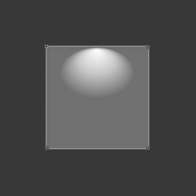continents (globe-90fr.svg, globe-180fr.svg or globe-360fr.svg file)
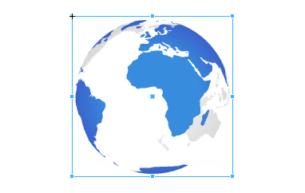outer-shadow (outer-shadow.svg file)

sphere (sphere.svg file)

In Adobe Edge Animate project you can modify position of the globe, add additional graphics, modify opacity, display property (on/off) of the elements. Or move the globe to another Edge Animate project. If you want to change colors of the elements, open respective SVG file in your favorite code editor. Instructions for that below.
How to resize globe’s elements
Global resizing
If you want to resize the globe with all the elements altogether, do it in Edge Animate:
- Open
globe_30fps.an - On main Stage click on “globe” element to select it
- In Properties panel on the left there's “Position and Size” section located
- There you can edit
width,height,XandYposition

Fine-tuning individual elements
You might face situations when you just want to alter individual elements’ dimensions, so fine-tuning of SVG elements’ is needed.
<ellipse> Used in sphere.svg
rx,ry: ellipse horizontal and vertical radius (width/height at the same time). For example:97.4cx,cy: X, Y position of ellipse’s center. For example:100or50%
The ellipse is centered in cx, cy like the circle. But the radius in the x and y directions are specified by two attributes, not one: The rx and ry attributes. As you can see, the rx attribute has a higher value than the ry attribute, making the ellipse wider than it is tall. Setting the rx and ry attributes the same number would result in a regular circle.
How to change the colors of continents and sphere
Front and Back continents are in globe-90fr.svg file (or SVG with "180fr" or "360fr" in filename), which is SVG spritesheet. Animation is done by showing only relevant part of this spritesheet that contains all (90, 180 or 360) frames of globe rotation loop:
In your favorite code editor open SVG file (from “images” folder) named globe-90fr.svg (or SVG with "180fr" or "360fr" in filename).
Almost all Front and Back continents are filled with radial gradients (in some files - pure solid color). Radial gradients are gradients in which the colors change circularly (not linearly).
globe-90fr.svg or SVG with "180fr" or "360fr" in filename
<radialGradient id="fr" > is for front continents. <radialGradient id="bck" > is for back continents.
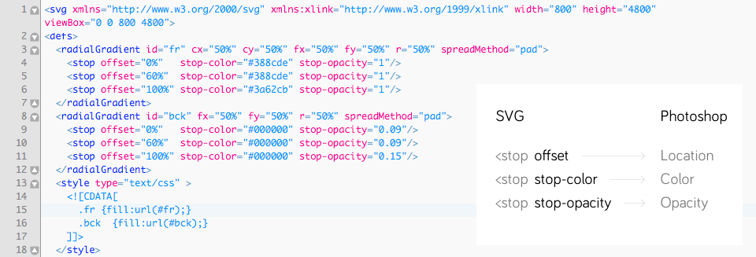The <radialGradient>-element has nested <stop>-elements. The <radialGradient>-element controls the direction of the gradient. The <stop>-elements control the colors used in the gradient, how far into the shape the colors start and stop, plus the opacity of the gradient.
Here is a list of the <stop> element attributes:
- How far into the shape this color starts (if the first color of the gradient) or stops (if the last color of the gradient). Specified as percentages of the shape the gradient is applied to.
- The color of this stop-point. The color the gradient changes from / to.
- The opacity of the color of this stop-point. If opacity changes from one stop-point with 1 to another with opacity 0, then the color will gradually become more transparent.
<stop> element attributes' equivalents in Photoshop:
offset > Location
stop-color > Color
stop-opacity > Opacity
Note: in Photoshop opacity values are expressed as percentage, so you'll have to convert them when placing into SVG (divide by 100). For example, 50% in Photoshop will be 0.5 in SVG.
More on SVG Gradients: http://tutorials.jenkov.com/svg/svg-gradients.html
Solid colors instead of gradients
If you prefer to use solid colors, not gradients. Front continents for example:
- Open SVG file (for example globe-90fr.svg) in code editor.
- In
<style>section find the line.fr {fill:url(#fr);}
It uses reference to gradient ID named "fr". Instead of url(#fr) use Hex color code, for example fill:#000000. - So the final line should look like this:
.fr {fill:#000000;} - Save the file.
Preset #11 (solid) uses SVG files with Outer shadow, Reflections hidden. In addition, Continents and Sphere are filled with solid colors.
sphere.svg
Similar SVG structure like in in globe-90fr.svg. Also uses radialGradient.
globes.psd
Additionally I have made and included PSD file (globes.psd) with all the globes that can be found in this package. There you can tweak gradients by playing with colors and see the results instantly. Then just grab the color codes into SVG files.
- Open globes.psd
- Select element's layer (named continents.front, continents.back or sphere)
- From Photoshop menu choose Layer > Layer Style > Blending Options > Gradient Overlay
- Click on "Gradient"
- Click on "Stops" (red boxed in picture below)
- Modify values, drag them to reposition
11 Presets
01.white-blue
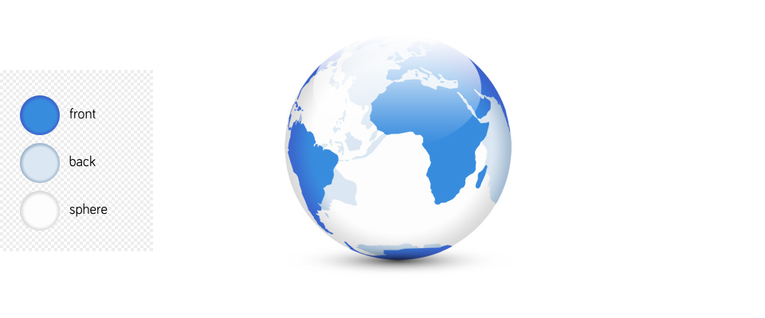02.blue-green
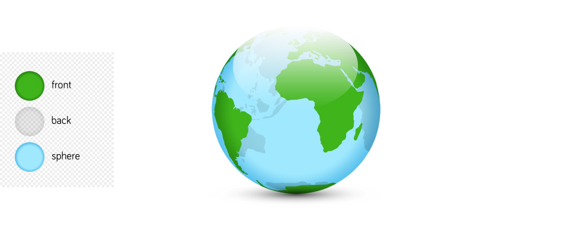03.blue-blue
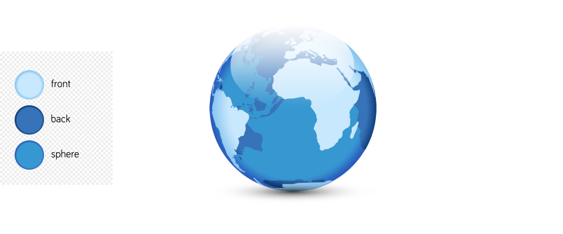04.green
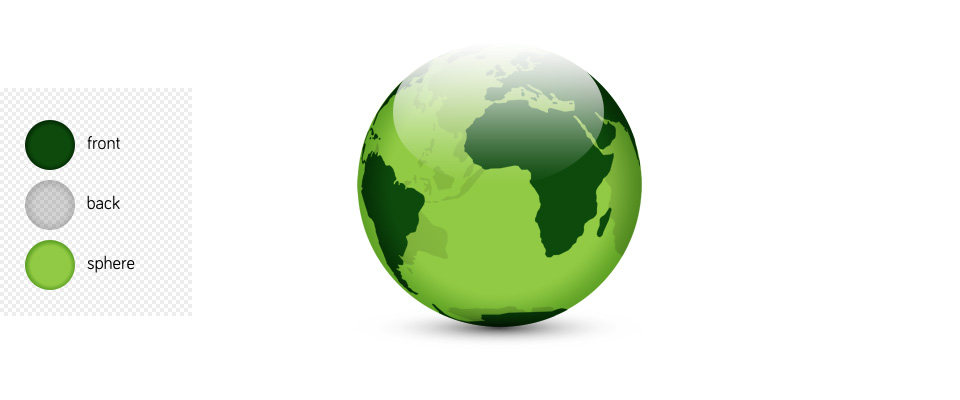05.blue-yellow
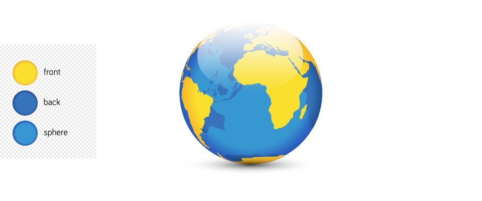06.white-orange
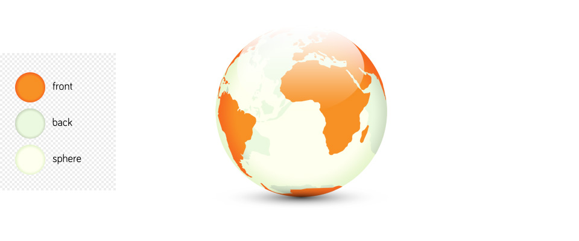07.black-yellow
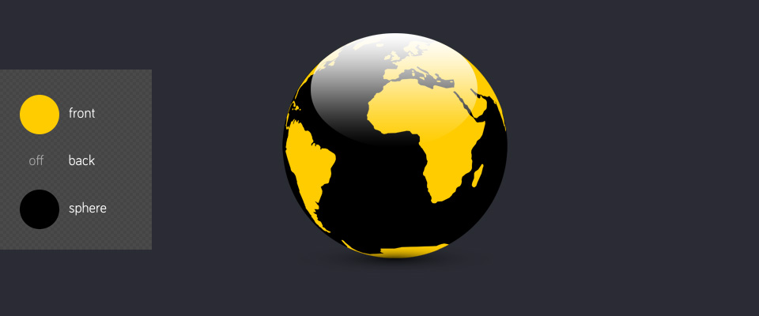08.dark-grey-yellow
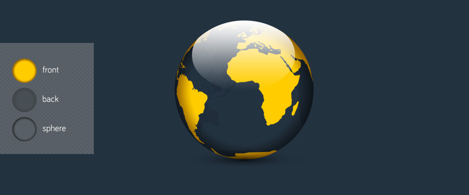09.grey
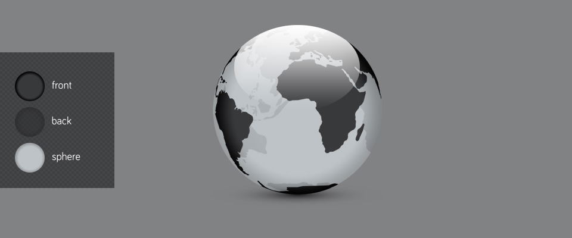10.blue-blue-white
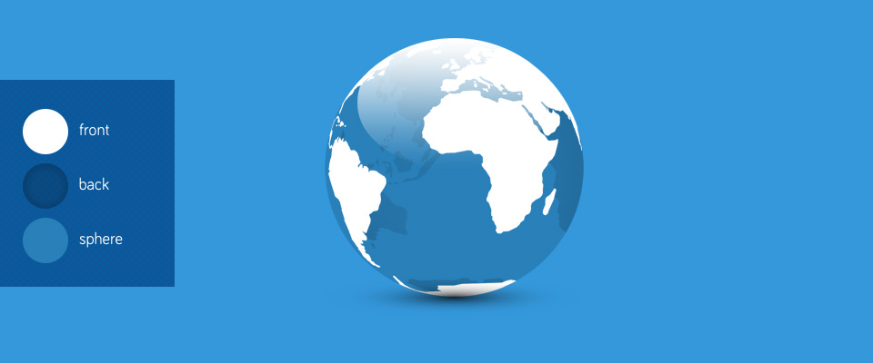11.solid
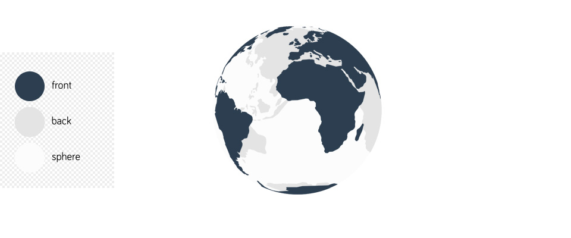Presets for Reflections
There are 4 predefined reflections' gradients in file reflections.svg.
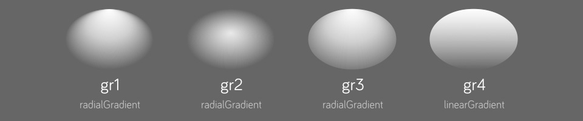By default the shape of reflections element uses gradient with ID named "gr1". The other are gr2, gr3 and gr4.
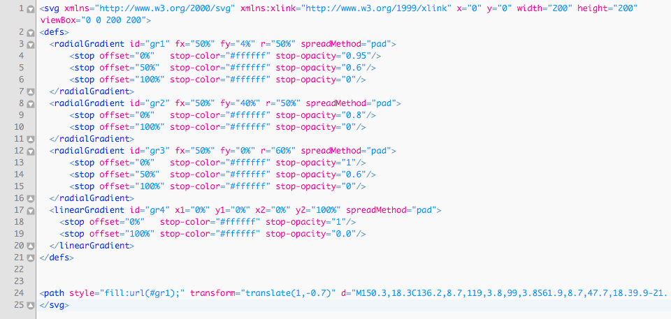If you want to select another one:
- Open reflections.svg in code editor
- Find the line with code
<path style="fill:url(#gr1)"...> - Change gr1 to gr2, gr3 or gr4.
- Save the file.
Additionally you may alter gradient stops' opacity, colors or create your own gradient.
Hide elements by editing SVG files
Hide Back continents
- Open SVG file globe-90fr.svg (or SVG with "180fr" or "360fr" in filename)
- In
<style>section find the line.bck {fill:url(#bck);}
It uses "bck" class to point to Back continents. - Replace
fill:url(#bck)withdisplay:noneCSS property - The final line should look like this:
.bck {display:none;} - Save the file.
Hide Sphere, Outer shadow
- Open SVG file sphere.svg (or outer-shadow.svg)
- Find the line that begins with
<ellipse... - Replace
fill:url(#rg);withdisplay:noneCSS property - Save the file.
Hide Reflections
- Open SVG file reflections.svg
- Find the line that begins with
<path... - Replace
fill:url(#gr1);withdisplay:noneCSS property - Save the file.
Preset #11 (solid) uses SVG files with Outer shadow, Reflections hidden. In addition, Continents and Sphere are filled with solid colors.
Preloader
Edge Animate project uses one of the Edge native preloaders. To edit or replace:
- From main Menu select View > Preloader Stage
- Click “Insert Preloader Clip-Art...” button on the left.
- Select from the list.

Fallback poster image for legacy browsers
When visitors view your content in a legacy (older) web browser, the poster image is displayed. I've included poster images in every Edge Animate project (.an) in this package. To view it:
- Select from main Menu: View > Down-level Stage
Read more on that here: http://helpx.adobe.com/edge-animate/using/target-older-browsers.html
Publishing from Edge Animate
After you've done editing in Edge Animate, publish the project files:
- Choose Published Content. From main menu: File > Publish Settings... > Publish Target
- Web (optimized HTML)
- Animate Deployment Package (.oam) for Adobe Muse
- iBooks / OS X Dashboard Widget (.wdgt)
- Publish. From main menu: File > Publish
- Project files are published into
publishfolder
CDN Hosting
In this bundle projects published for web use Adobe Content Distribution Network (CDN) Hosting to speed up Animate composition delivery - JS files edge.*.*.*.min.js and jquery-*.*.*.min.js are loaded externally from public Adobe server.
Compositions using the Adobe CDN all share a single URL for jQuery and the Edge Runtime. The browser caches the runtime, so the user only downloads the library once no matter how may Animate compositions they view, even if compositions are on different sites and produced by different authors.
Don't use the CDN if your composition needs to run without an Internet connection or if you want to use your own hosting exclusively.
SVG files require proper web server MIME-type configuration
If SVG files don't show up on web, the server doesn't serve MIME types for SVG files correctly. You should configure server appropriately. There are several ways to do it, depending upon the server type, and your access to server settings.
For example, in Apache server it's done by editing .htaccess configuration file that is hidden - make sure your FTP client shows hidden files. If your server does not have such a file, create a file and name it “.htaccess”, and associate the SVG file extensions with the correct MIME Type; if the file already exists, you can simply add the correct entries to it. The particular line you should add are:
AddType image/svg+xml svg
The .htaccess file should be placed in the directory that contains the SVG file, or any parent directory.
More on this subject: http://www.w3.org/services/svg-server/
Using Compressed SVG files (.svgz)
SVG images are well suited for lossless data compression. When an SVG image has been compressed with gzip algorithm, it is referred to as an “SVGZ” image and uses the corresponding .svgz filename extension. An SVGZ file is typically 20 to 50 percent of the original size.
Because Edge Animate interface doesn't support compressed SVG files, all project files here are using uncompressed SVG. But I'd strongly suggest you to compress large SVG files for bandwidth matters in final stage of project development. Particularly files with continents' shapes. For example, uncompressed globe_90fr.svg file weights 1.15 MB, and only 300 KB after compression. It's even 4 times smaller with compression ratio up to 74%. See table below:
| File | .svgz (Compressed) | .svg (Uncompressed) |
|---|---|---|
| globe_90fr | 300 KB | 1,150 KB |
| globe_180fr | 600 KB | 2,300 KB |
| globe_360fr | 1,200 KB | 4,600 KB |
Replace SVG with SVGZ, let's take for example globe_90fr.svg:
- After you have done all modifications in the file
- GZIP file with file archiver that supports gzip compression (7-Zip, Keka or else)
- Replace extension of newly created file from .svg to .svgz:
globe_90fr.svgz - Open
globe_30fps_edge.js - Replace
globe_90fr.svgwithglobe_90fr.svgz - Save the file
- Test on the web, not locally (see “Note” below)
All images folders also have compressed version of SVG file (globe_90fr.svgz). So skip first two steps if you don't wish to modify the continents.
Note: Adobe Edge Animate (as for version 3.0) can't read .svgz files, so they won't appear in “Library” Panel. And most of the browsers doesn't read .svgz files locally (Chrome 33.0.1750.117 does), but read them from web.
Server configuration (read section: SVG files require proper web server MIME-type configuration) requires two additional lines added:
For Apache server (lines 2 and 3):
AddType image/svg+xml svg
AddType image/svg+xml svgz
AddEncoding x-gzip .svgz
Line #1 is for uncompressed SVG files (with *.svg file extension). #2-3 lines is for gzip-compressed SVG files (*.svgz).
Notes
The original map is taken from the NASA website as a source.
The projects were produced using Adobe Edge Animate CC version 3.0.